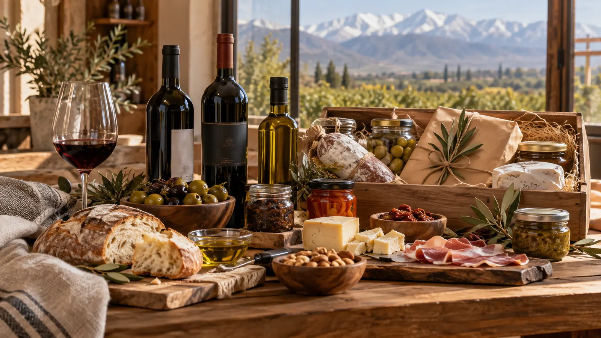
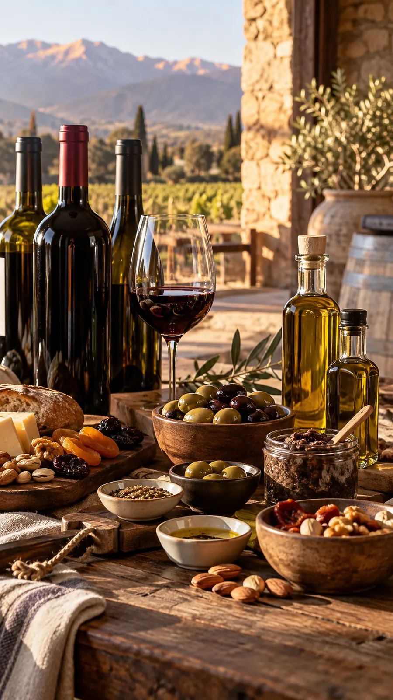

PRODUCTOS REGIONALES DE CUYO
Sabores de Cuyo, más cerca de tu mesa.
Vinos, aceites de oliva, aceitunas, frutos secos, condimentos y delicatessen de Mendoza y San Juan, ahora en Buenos Aires.

01 Sabores de Mendoza y San Juan02 Una selección para compartir03 En Buenos Aires
ELEGÍ POR SABOR
Un recorrido por nuestra selección.
Del vino al aceite de oliva, de los frutos secos a esos detalles que completan una buena mesa.
PARA EMPEZAR A EXPLORAR
Sabores que invitan a descubrir.
Cargando productos...
Productos, imágenes y precios ilustrativos para esta demo. Confirmá disponibilidad y precio final antes de pedir.

ALMA CUYANA ARGENTINA
De Cuyo a Buenos Aires, con sabor a origen.
Traemos productos de Mendoza y San Juan para que esos sabores encuentren lugar en tu mesa. Vinos, aceites de oliva, aceitunas, pastas, frutos secos, condimentos y delicatessen.
Explorar los productosSEGUÍ DESCUBRIENDO
Ver todo el catálogo Más para tu mesa.
Cargando productos...